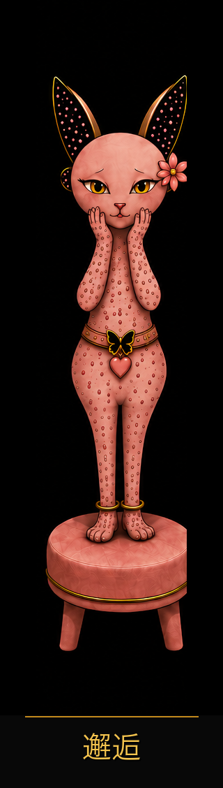
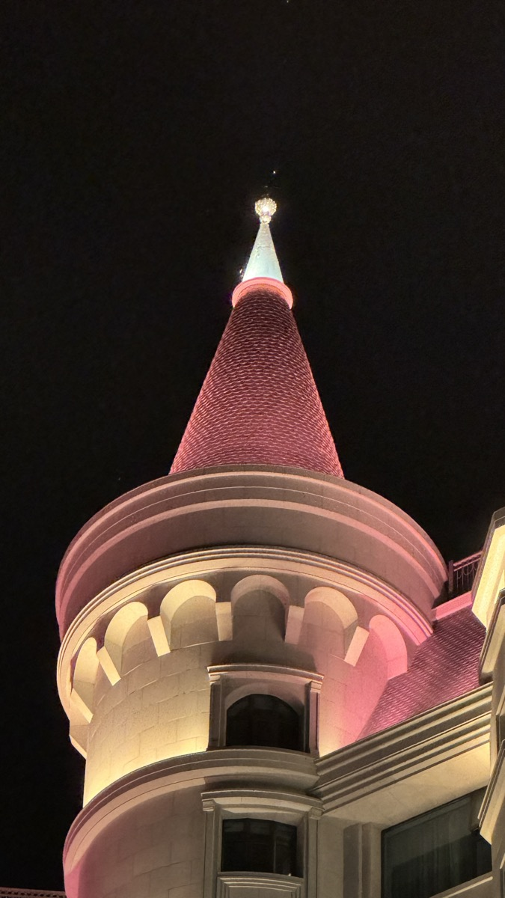
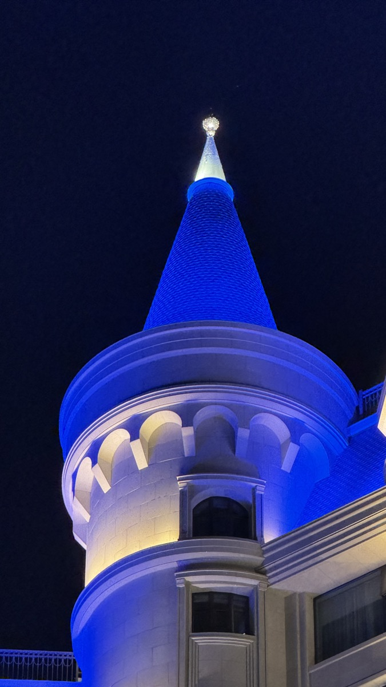

BUTTERFLY MANOR · SFSC

照狸六色循环测试
这不是一次人格诊断，
而是一张此刻的香气状态地图。
18 个瞬间 · 约 3 分钟 · 每次遇见不同的题
邂逅觉醒蝶变绽放守护共生
照狸会陪你看见：此刻的你，走到了六色循环的哪一站。
SCENT MEMORY
你的香气状态
照狸六色循环测试结果
你的专属照狸
SFSC 状态码
这不是一个固定标签。
这是你此刻的香气状态码。
六色状态总览
读懂你的 SFSC 状态码
你的 SFSC 状态码由三部分组成：第一位是主香，第二位是副香，第三位是下一站香。
你走到的这一站
你的六边形复眼状态图
人不是一种固定答案，而是一张正在生长的六边形。今天的状态不是终点，它只是你此刻最需要被看见的一面。
照狸看见的你
照狸看见的你
照狸看见的，不只是你表现出来的样子。
你的心理特质图谱
你的能量从哪里来，又在哪里被消耗
你的明亮面，也有需要被照顾的地方
我的三重香气结构
主香代表此刻的你。副香代表隐藏的你。下一站香代表正在生长的你。
香型
关键词
适穿季节
给今天的你一句话
觉察不需要很大。一个很小的动作，也可以让今天开始不同。
一首词，写给此刻的你
主香认领
认领你的主香
这不是小样。这是你今天的主香认领装。如果这支香让你觉得「有一点像现在的我」，就把今天的自己带回生活。
沉浸体验
住进你的香气状态


蝶坞会员
保存今天的自己，30 天后再看看变化
蝶坞会员不是积分系统，而是蝴蝶坞为你保存六边形香水人格、主香与复测记录的成长档案。
蝶坞会员 · Butterfly Cove Member
加入蝶坞会员档案
保存本次主香、副香、下一站香和六边形状态。30 天后，照狸会通过企业微信提醒你回来复测，生成前后对比报告。
保存主香档案
30 天复测提醒
前后对比报告
会员专属体验
添加企业微信顾问
正式上线时替换为企微活码。添加后可保存档案、领取权益，并设置 30 天复测提醒。